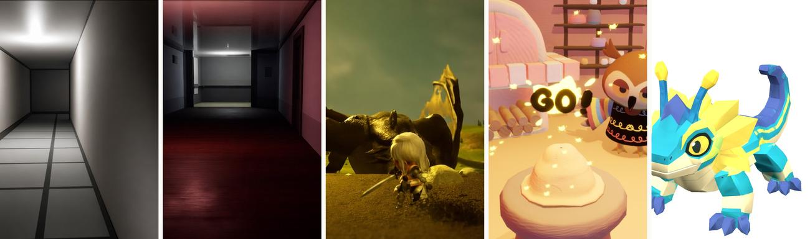
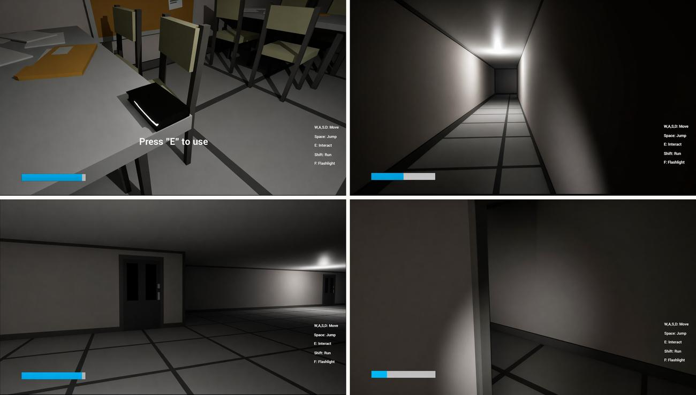
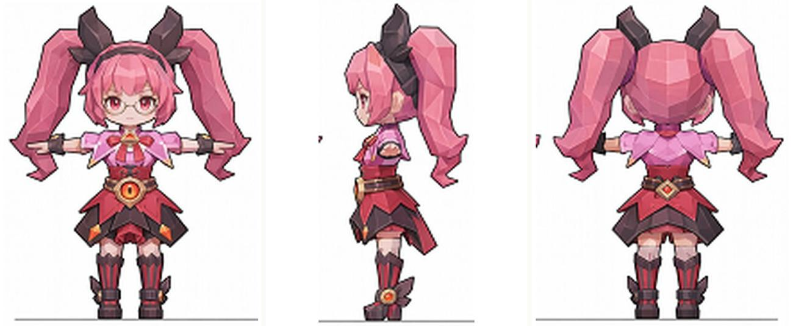

Game designer working at the seam between systems design,
technical implementation, and AI-assisted content production.
Systems Designer at Tencent TiMi Studio Group · B.S. Games, University of Utah.
IGame Design — four solo and team titles
IISystems Design in Production — a live mobile MOBA
IIIAI-Assisted Art Pipelines — method and limits
IVTools & Full-Stack Work — shipped systems

Selected Works · Online Edition All work is original and created by the applicant.
Generative-AI use is disclosed on the final page.
shenlinkun829@gmail.com
About
I design systems — and build the pipelines that make them producible.
I came into games through design and stayed because of the machinery underneath it.
Across four solo/independent titles and two years inside a live mobile MOBA, the thread in my work
has been the same: a design is only as good as the production system that can actually ship it a
hundred times over.
That belief pushed me from writing design documents into writing the tools — behaviour trees,
blueprint logic, editor scripts, configuration generators — and, more recently, into
AI-assisted content pipelines: image generation, image-to-3D, retopology, rigging, and the
validation gates that keep generated assets from silently breaking a build.
What I want from a graduate programme is the other half of that loop: the theory, the critical
vocabulary, and a studio culture where the question isn't only "can this be produced?" but
"what is worth producing?"
How I work
Framework first, features second. Structure the system, then fill it.
Instrument everything. If I can't measure the experience, I'm guessing.
Automate the repetition, never the judgement. AI proposes; a human gate approves.
Capabilities
Design Systems & economy · level design · combat & boss encounters · environmental / looping narrative
Engineering Unreal Blueprints · behaviour trees · Python tooling · Flask / SQL · CI test gates
Art & Tech Art Maya · MotionBuilder · ZBrush · Blender · retopology · skinning · PBR · rig retargeting
AI Production Image generation · image→3D · ComfyUI local deployment · RAG pipelines · multi-model API middleware
A first-person psychological horror game about reading a building that refuses to explain itself.
Role
Solo — design & all Blueprint implementation
Engine
Unreal Engine 5
Duration
Aug – Dec 2024
Outsourced
Selected art & audio assets only

Fig 1–4. Walk, look, press E — the whole verb set. One light at the vanishing point;
the flashlight is the only argument against the dark.
The core loop
Exploration is the loop; pursuit is a rare branch off it. I deliberately
kept the chase scarce — constant threat becomes noise and the player stops feeling it, whereas a threat that
has fired once and could fire again turns every ordinary corridor into a possible corridor.
Takeaway — mid-project I refactored the Blueprint layer into
explicit categories; iteration speed roughly doubled. Framework first, features second.
Design decisions
The threat is rare on purpose. Pursuit occupies only a small fraction of the running
time. Dread does not come from being chased often — it comes from having been chased once and not knowing
when it will happen again. Most of the game is the waiting.
The AI must be able to lose. The pursuer disengages once the player exits its detection
region. A monster that can never be escaped stops being a threat and becomes a timer.
State changes are diegetic. Triggering a mechanism swaps the score and shifts the
practical lights — the player learns the rule of the space without a single line of UI.
Resources meter the courage. A flashlight and a finite stamina bar are the only systems
the player manages. Both spend fastest exactly when they are most needed, so caution has a price and panic
has a bigger one.
I · Game Design — Dream03
II · Systems Design in Production — 05
Character presentation state machine
Sole owner of the animation state architecture behind a collectible companion system in a live mobile MOBA.
Context
Tencent TiMi Studio Group · Systems Designer
Title
Nation-wide mobile MOBA (live service)
Period
Aug 2025 – present
Ownership
Sole designer for the state architecture
Under NDA No proprietary screenshots, configuration data or engine files are shown.
All diagrams in Section II are re-drawn by me at a generic, non-identifying level of abstraction.
The problem
Out-of-match companions have to idle, wander, react to the player, respond to taps, and play
one-off performance beats — while the player is simultaneously browsing menus, changing outfits and entering
queue. The failure mode is not a missing animation; it is a bad seam: a companion snapping
mid-stride, or freezing because two systems each believed they owned the character that frame.
The architecture
Explicit single ownership. Exactly one state drives the character each frame; every other
system requests rather than sets. This removed the entire class of "two systems fighting" bugs.
Transitions are content, not glue. Each edge has its own authored blend-out, so a walk that
is interrupted by a tap decelerates instead of cutting.
Interrupts resolve by declared priority. A reaction can always take the character from
idle or move, but never from a one-shot performance mid-beat.
Outcome
Out-of-match presentation reads as continuous motion rather than a
sequence of clips. Concretely: no more visible pops at the idle↔move seam, and reaction beats can be
triggered from any menu context without the animation team hand-authoring a case for each one.
What I actually did
Enumerated every behaviour the feature promised, then cut the state list to the smallest set that could
express all of them.
Wrote the transition matrix — including the illegal transitions, which is where most of the design lives.
Specified blend timings against the animation team's clips rather than assuming defaults.
Sat in review with engineering and animation until the seam list was empty.
Design principle carried forward
A state machine is a contract about who is allowed to lie to
the player. Writing down which transitions are forbidden turned out to be far more valuable than
enumerating the permitted ones.
State machinesAnimation systemsCross-discipline specLive service
II · Systems Design in Production04
II · Systems Design in Production — 07
Gameplay-mode logic: skills, monster AI, boss phases
Adapting a competitive hero roster into an entertainment battle-royale mode — and rebuilding the enemy AI that populates it.
Under NDA Structures below are re-drawn generically; no proprietary logic assets are reproduced.
Re-tuning skills for a different contract
A competitive MOBA kit is balanced for a 15-minute macro game. Dropped into a fast entertainment
mode, the same kit reads as sluggish — long cooldowns and resource costs that exist to create macro decisions
instead just create waiting. I worked through the roster adjusting cooldowns, costs and trigger conditions via
hero logic graphs and buff triggers so the kits kept their identity while matching the new tempo.
The rule I worked to
Change the rhythm, never the fantasy.
A player who mains a hero should still recognise their hero; what changes is how often they get to be them.
Where the AI actually lived
A significant finding during this work: the monster AI I was asked to modify was not driven by
the visual logic graphs at all, but by behaviour-tree assets referenced by a path field in the
configuration table. Edits to the graphs had no effect — the graphs were vestigial. Tracing the real
execution path before changing anything saved the rest of the schedule.
Transferable lesson
In a decade-old live codebase, the documented system and the
running system are different systems. I now verify which one I'm editing before I touch it — usually by
instrumenting a probe and watching the log, not by reading the code.
Boss encounter: phase state machine
Transformation is a buff, not a new entity. Driving phase changes through the buff layer
keeps threat, targeting and aggro state intact across the transition, so the encounter never resets its
social contract with the players fighting it.
Reuse the proven AI, replace the form. Cloning an existing, battle-tested behaviour tree
and changing the presentation per phase produced a stable boss far faster than hand-authoring a new
AI graph — an approach I arrived at after a hand-built version repeatedly deadlocked.
Fail loudly. The debugging discipline that came out of this: a boss that gets stuck in
idle is a design bug with an engineering signature, and it is found by reading timestamps, not by intuition.
Scaling a mode's content 20 → 110+ with an AI-assisted pipeline
The design problem was never generation speed. It was building a validation gate I could trust.
Under NDA Method described at architecture level only; no configuration data is shown.
20 → 110+
Characters configured for the mode
≈ 7×
Throughput vs. manual authoring
4-stage
Automated validation gate
0
Generated entries shipped unreviewed
Pipeline architecture
The actual insight
Generation was the cheap part. The expensive part was answering
"how do I know it isn't wrong?" at a scale where I can no longer read every entry.
So the design work went into the gate: a machine-checkable definition of what "correct" means for one entry,
applied to all of them.
Design rules that made it work
Never hand-patch a generated artefact. A one-off fix hides a systematic defect; the
failure has to be pushed back into the pattern so it is fixed 110 times.
Encode the traps. Every production landmine I hit (a path field that silently needs a
file extension, an index that must equal its own position, a byte-order marker that crashes a loader) went
into a written constraint list the pipeline checks against.
Keep a human at the end. The gate rejects; only I approve. Nothing generated reached
the build without review.
Why this is a design skill, not a tooling skill
Defining the validation gate is writing down what the design
actually requires — most of what a spec leaves implicit becomes explicit the moment a machine has to check it.
The pipeline was, in effect, the most rigorous design document I have ever written.
Each stage validates against the style anchor, so drift is caught at the
stage that caused it rather than discovered at rigging. That single rule is what turns a pile of prompts into
a pipeline.
Local deployment, real limits
ComfyUI runs locally on a 12 GB consumer GPU with custom nodes.
Working inside a fixed VRAM budget forces honest engagement with batching, resolution ladders and
quantisation trade-offs, instead of treating generation as an infinite cloud resource.
Why this is a design problem
Deciding what to decompose into is the whole job. Split a
character too finely and every asset needs bespoke assembly; too coarsely and nothing is reusable. That
judgement is not automatable, and it is the part I find genuinely interesting.
Four rules I arrived at the hard way
Decompose before you generate. A whole dressed character comes back as an
un-editable blob. Hair / garment / accessory / footwear as separate passes gives you a wardrobe instead
of an asset.
Never generate a dressed body as one mesh. It looks right and deforms wrong — the
garment inherits the body's weights and shears at the shoulder. Base body, garment shell and sleeves each
need their own weights.
Thicken before generating, not after. Cloth and hair edges come back as
zero-thickness shells and vanish under normal-based shading.
Normalise scale on arrival. Every generated part returns in its own units; making
this a mandatory step rather than a remembered one removed a whole class of silent failures.
The honest limit
These tools reach roughly 70 % in minutes and then
stop. Silhouette correction, topology that survives deformation, and weight painting are still entirely
human — and they are exactly where an asset becomes either good or unusable.
My interest is in designing that handoff, not in pretending it does not exist.
Pipeline designImage→3DRetopologyPBRComfyUIMaya
III · AI-Assisted Art Pipelines07
III · AI-Assisted Art Pipelines — 10
Anchor-then-generate
Reference sheets are the input to every image-to-3D tool. Getting three views that actually
agree is the whole problem — and the obvious approach is the one that fails.

Fig 1. Front, side and back, generated as three separate conditioned passes against one
locked anchor. Same proportions, same palette, same costume logic — which is what a downstream 3D generator
needs in order to reconcile them into a single mesh.
The failure I started from
Asking a model for a three-view sheet in one image is the obvious approach and it fails
reliably: adjacent panels contaminate each other, and once you crop them the front and side no longer describe
the same character. Anchoring style and proportion first, then generating each view as its own
conditioned pass, produces views a downstream generator can actually use.
Why the order matters
The anchor is an asset, not a prompt. Once a proportion and palette reference exists as
a file, every later character is negotiated against it rather than against the last thing the model
happened to produce. Consistency stops being a per-character argument.
Separate passes cost more and fail less. Three conditioned generations are slower than
one sheet, but a sheet that has to be re-rolled four times is slower still — and re-rolls silently change
the character.
Orthographic means un-posed. Any perspective or dynamic pose in a reference view becomes
baked geometry downstream, so the discipline is to generate something deliberately boring.
Why this matters beyond art
Everything difficult about generative production is a
consistency problem, not a quality problem. Any model can produce one striking image; a
production needs a hundred that belong to the same world. The method above is my answer to that, and it is
the question I most want to keep working on academically.
Money is never a float. All amounts stored as strings and computed as decimals, behind a
single wallet service that every balance change must pass through, with a signed ledger entry per movement.
The system is auditable by construction rather than by discipline.
The deploy gate is the quality bar. 70 smoke tests run in CI on every push; the deploy
only fires if all pass. Not "run the tests" — red means it does not ship.
AI proposes, a human commits. To speed up settlement I added a vision model that reads
result screenshots. Its output goes to a staging buffer and a confirmation dialog — the model never
writes to the database. Low confidence returns "unknown" and settles nothing.
Design lesson
Real users double-click. Handling that took three layers — front-end
submit locking, a server-side duplicate window, and a database uniqueness constraint as the final guarantee.
A design that only works when the user behaves is not a design.
Architecture
The analytics loop
I designed the event-tracking taxonomy alongside the features, so
behaviour data existed from day one. It showed which pages users actually reached (averaging 6.26 active
pages each) and drove the next round of navigation and UI changes. Instrumenting at design time
rather than after launch is the single practice I would carry into any product I work on.
Full-stackSystems economyCI test gatesAnalytics designHuman-in-the-loop AI
IV · Tools & Full-Stack Work09
IV · Tools & Full-Stack Work — 13
Second Brain — a self-organising knowledge system
A personal research project: a retrieval system that keeps learning, de-duplicating and correcting itself, built as a graph rather than a list.
79
Atomic memories
128
Semantic connections
16
Higher-order insights
3-tier
Retrieval cascade
Structure
Flat vector search returns things that are similar. Building explicit connections
between memories, then distilling densely-connected clusters into higher-order insights, lets the system return
things that are relevant but not obviously similar — which is where most useful retrieval
actually lives.
The retrieval cascade
Escalation is cheapest-first by design: each tier is tried only when the
one above it fails, so cost and risk are paid only when they buy something.
Two ideas I am proud of
1 · A quarantine before the library
Anything newly acquired lands in a staging area, not
the main store. It is promoted only after passing a quality gate — length, source credibility, and
near-duplicate similarity against existing memories. Most systems optimise retrieval; almost none defend
ingestion. A knowledge base degrades from what you let in.
2 · A retrieval cascade, cheapest first
Queries try the existing memory store, then a local document sweep,
and only then reach the open web. Most questions are answered before the third tier — which saves time,
cost, and the temptation to trust a stranger's page over your own recorded experience.
Why a designer built this
It started as a practical problem — hundreds of scattered
production notes I could no longer search — but the interesting part turned out to be an interface question:
what should a system remember on your behalf, and how does it show you that it might be wrong?
That is the research question I would most like to pursue formally.
Declared in full, in line with the programme's request.
Section III — AI-assisted art pipelines — generative image and image-to-3D models were used as
production tools, which is the explicit subject of that work. Concept direction, part decomposition,
retopology, assembly, rigging, weight painting and all in-engine work are mine.
Section II — content scaling — AI-assisted generation was used to author configuration
data behind a validation gate I designed. No generated entry shipped without human review.
Section I — game projects — no generative AI was used in the games themselves:
design, level construction, Blueprint logic, behaviour trees and animation are hand-authored. Screenshots
were upscaled with AI super-resolution for print clarity; content is unchanged.
This document — written by me; layout is hand-coded.
Confidentiality
Section II describes work carried out at Tencent TiMi Studio Group
and is covered by a non-disclosure agreement. No proprietary screenshots, configuration data,
source assets or unreleased content appear anywhere in this portfolio. All diagrams in that section
were re-drawn by me at a generic level of abstraction that conveys the design reasoning without disclosing
the product. I would rather present my industry work honestly and incompletely than present it improperly.
Credits & scope of authorship
Dream · 0423 · Jim's Adventure — solo projects; all design and implementation
mine, with selected art and audio assets sourced or outsourced.
Clay Beats — team capstone; my ownership was animation production and core interaction design.
The title is credited to the full team.
Industry work (Section II) — collaborative by nature; my specific contribution is stated on each page.
Everything in Sections III–IV is individually authored.
shenlinkun829@gmail.com
B.S. Games, University of Utah · Systems Designer, Tencent TiMi Studio Group
Thank you for reading. Every project here is the same question asked in a different
medium: what has to be true about a production system before an idea can survive contact with it?